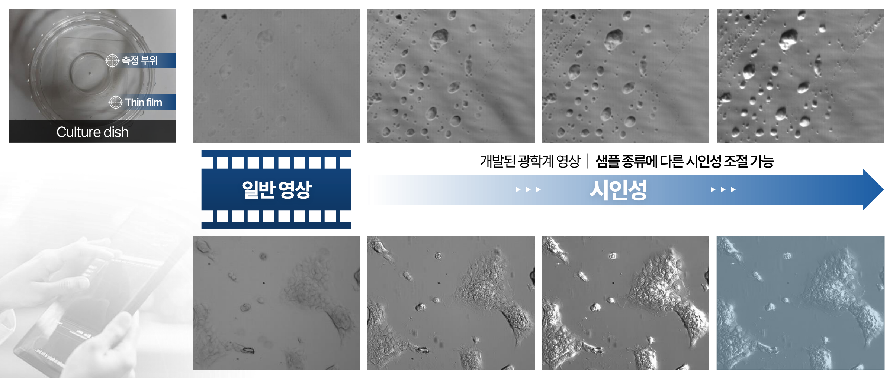

차별화된 광학 기술 Advanced Optical Technology

호프만 방식(Hoffman Modulation Contrast, HMC) 기반 광학 기술Key Point 1
염색이나 라벨링 없이도 **반투명한 시료(세포, 배아, 미세입자 등)**는 배경과 명암 차이가 작아 일반 광학 영상에서 형태가 흐릿하게 보이기 쉽습니다. OSBION의 광학 기술은 **호프만 방식(HMC)**을 적용해, 잘 보이지 않던 미세 구조를 **선명한 명암 대비(입체감 있는 “릴리프” 표현)**로 변환해 제공합니다. Without staining or labeling, semi-transparent samples (such as cells, embryos, and microparticles) often have only a small difference in brightness from the background, so their shapes can easily appear blurry in standard optical images. OSBION’s optical technology applies the Hoffman Modulation Contrast (HMC) method to convert previously hard-to-see microstructures into clear light-and-shade contrast (a three-dimensional, relief-like appearance) for improved visibility.
원리 Principle
호프만 방식은 시료가 빛을 “흡수”해서 어둡게 만드는 것이 아니라, 시료 내부의굴절률/두께 차이로 발생하는 위상(phase) 변화를 이용합니다. 투명 시료를 통과한 빛은 밝기 변화는 작지만위상이 미세하게 달라집니다. 호프만 광학계는 특수한슬릿(개구) + 공간 필터로 이 위상 변화를밝기(명암) 변화로 바꿉니다. 그 결과, 경계/표면의 미세한 굴곡이 강조되어윤곽이 또렷하고 입체감 있는 영상을 얻습니다. 시료 종류나 관찰 목적에 따라대비(시인성) 강도를 조절해, 과도한 강조 없이 최적의 가시성을 맞출 수 있습니다. The Hoffman method does not make a specimen appear darker by “absorbing” light; instead, it uses phase changes caused by differences in refractive index and thickness within the specimen. Light passing through a transparent sample shows little change in brightness, but its phase shifts subtly. A Hoffman optical system uses a specialized slit (aperture) and a spatial filter to convert these phase differences into intensity (light–dark) variations. As a result, fine undulations along boundaries and surfaces are enhanced, producing images with sharper outlines and a three-dimensional, relief-like appearance. Depending on the sample type and the purpose of observation, the contrast (visibility) strength can be adjusted to achieve optimal visibility without excessive enhancement.
장점 Advantage
- 라벨 프리(Label-free): 염색/형광 표지 없이도 투명 시료를 선명하게 관찰
- 라이브 관찰에 유리: 시료 처리 없이 관찰 가능해 세포/배아의 자연스러운 상태 유지에 도움
- 윤곽·미세구조 강조: 흐릿한 경계, 얇은 막, 미세 입자 등이 명확한 명암 대비로 표현
- 시료/환경 호환성: 배양접시 등 일반적인 관찰 환경에서도 적용이 쉬워 현장 활용성이 높음
- 대비 조절 가능: 샘플 특성(투명도, 두께, 밀도)에 맞춰 시인성(contrast) 최적화 가능
- Label-free: Enables clear observation of transparent samples without staining or fluorescent labeling.
- Ideal for live observation: Allows imaging without sample preparation, helping maintain the natural state of cells/embryos.
- Enhanced outlines and microstructures: Blurred boundaries, thin membranes, and microparticles are rendered with clear light–dark contrast.
- Compatible with common sample environments: Easy to apply in standard observation setups (e.g., culture dishes), making it highly practical for on-site use.
- Adjustable contrast: Visibility (contrast) can be optimized according to sample characteristics such as transparency, thickness, and density.
위의 이미지는호프만 방식 기반 시인성(대비) 최적화를 통해 배아의 윤곽과 내부 구조가 더 또렷하게 드러난 결과를 보여줍니다. OSBION은 배아 시료 특성에 맞춰 시인성을 정밀 조절하여,기존 배아 모니터링 장비에서 얻는 영상 대비 경계(윤곽)가 획기적으로 선명한 배아 이미지를 구현했습니다. 이처럼경계가 명확한 고품질 입력 데이터는 특징 추출의 일관성을 높여,배아 분석·분류를 수행하는 인공지능 모델의 정확도 향상에 직접적으로 기여합니다. The image above shows results in which the embryo’s outline and internal structures are revealed more clearly through visibility (contrast) optimization based on the Hoffman method. OSBION precisely adjusts visibility to match the characteristics of each embryo sample, enabling the creation of embryo images with dramatically sharper contrast boundaries (outlines) than those obtained from conventional embryo monitoring equipment. High-quality input data with such clearly defined boundaries improves the consistency of feature extraction, directly contributing to higher accuracy in AI models that perform embryo analysis and classification.